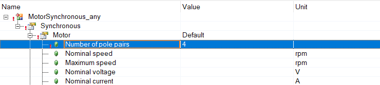
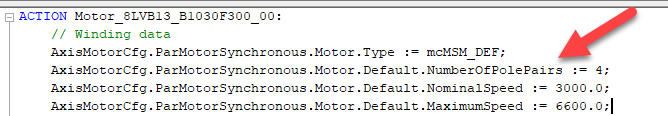

Synchronous motor table conversion
Conversion table for synchronous motors
The conversion table was created to the best of our knowledge but there is no guaranty that it is 100% correct. Please double check critical values in the Automation Studio help before using them. If you find any errors or have any suggestions please create an issue on github.
The table uses the following notation:
|  |
The configuration column shows the Automation Studio configuration. Each branch in the tree is presented as a list. For example the value shown in the left picture is written as:
Synchronous Motor Number of pole pairs |
|  |
The structure column shows the same value in code. Each element of the structure is presented as a list. For example the value shown in the left picture is written as:
Motor Default NumberOfPolePairs |
| Configuration name | Structure name | Constant | Par ID | Note |
|---|---|---|---|---|
| Synchronous Motor Number of pole pairs |
Motor Default NumberOfPolePairs |
MOTOR_POLEPAIRS | 47 | |
| Synchronous Motor Nominal speed |
Motor Default NominalSpeed |
MOTOR_SPEED_RATED | 50 | |
| Synchronous Motor Maximum speed |
Motor Default MaximumSpeed |
MOTOR_SPEED_MAX | 51 | |
| Synchronous Motor Nominal voltage |
Motor Default NominalVoltage |
MOTOR_VOLTAGE_RATED | 48 | |
| Synchronous Motor Nominal current |
Motor Default NominalCurrent |
MOTOR_CURR_RATED | 57 | |
| Synchronous Motor Stall current |
Motor Default StallCurrent |
MOTOR_CURR_STALL | 56 | |
| Synchronous Motor Peak current |
Motor Default PeakCurrent |
MOTOR_CURR_MAX | 58 | |
| Synchronous Motor Nominal torque |
Motor Default NominalTorque |
MOTOR_TORQ_RATED | 53 | |
| Synchronous Motor Stall torque |
Motor Default StallTorque |
MOTOR_TORQ_STALL | 52 | |
| Synchronous Motor Peak torque |
Motor Default PeakTorque |
MOTOR_TORQ_MAX | 54 | |
| Synchronous Motor Voltage constant |
Motor Default VoltageConstant |
MOTOR_VOLTAGE_CONST | 49 | |
| Synchronous Motor Torque constant |
Motor Default TorqueConstant |
MOTOR_TORQ_CONST | 55 | |
| Synchronous Motor Stator resistance |
Motor Default StatorResistance |
MOTOR_STATOR_RESISTANCE | 60 | |
| Synchronous Motor Stator inductance |
Motor Default StatorInductance |
MOTOR_STATOR_INDUCTANCE | 61 | AS uses mH PAR ID uses H |
| Synchronous Motor Moment of inertia |
Motor Default MomentOfInertia |
MOTOR_INERTIA | 62 | AS uses kgcm2 PAR ID uses kgm2 |
| Synchronous Motor Nominal ambient temperature |
Motor Default NominalAmbientTemperature |
MOTOR_AMB_TEMP_RATED | 865 | |
| Synchronous Motor Voltage limitation Maximum DC bus voltage |
Motor Default MaximumDCBusVoltage |
MOTOR_UDC_MAX | 1641 | |
| Synchronous Motor Encoder mounting Angle Commutation offset |
Motor Default EncoderMounting Angle UserDefined CommutationOffset |
MOTOR_COMMUT_OFFSET | 63 | User-Defined |
| Synchronous Motor Encoder mounting Angle Automatic identification |
Motor Default EncoderMounting Angle Undefined AutomaticIdentification Saturation PhasingCurrent |
PHASING_MODE | 276 | Undefined (Direct) Saturation Dither Dither2 |
| Synchronous Motor Encoder mounting Angle Automatic identification |
Motor Default EncoderMounting Angle Undefined AutomaticIdentification Saturation PhasingCurrent |
PHASING_CURR | 275 | Undefined (Direct) Saturation Dither Dither2 |
| Synchronous Motor Encoder mounting Angle Automatic identification |
Motor Default EncoderMounting Angle Undefined AutomaticIdentification Dither PhasingTime |
PHASING_TIME | 874 | Undefined Dither Dither2 |
| Synchronous Motor Temperature sensor Limit temperature |
Motor Default TemperatureSensor Thermistor LimitTemperature |
MOTOR_TEMPSENS_LIM | 1216 | Thermistor |
| Synchronous Motor Temperature sensor Temperature sensor interface |
Motor Default TemperatureSensor Thermistor TemperatureSensorInterface |
Thermistor | ||
| Synchronous Motor Temperature sensor ResistanceR0 |
Motor Default TemperatureSensor Thermistor ResistanceR0 |
MOTOR_TEMPSENS_PAR1 | 64 | Thermistor |
| Synchronous Motor Temperature sensor ResistanceR7 |
Motor Default TemperatureSensor Thermistor ResistanceR7 |
MOTOR_TEMPSENS_PAR2 | 65 | Thermistor |
| Synchronous Motor Temperature sensor TemperatureT0 |
Motor Default TemperatureSensor Thermistor TemperatureT0 |
MOTOR_TEMPSENS_PAR3 | 66 | Thermistor |
| Synchronous Motor Temperature sensor TemperatureT1 |
Motor Default TemperatureSensor Thermistor TemperatureT1 |
MOTOR_TEMPSENS_PAR4 | 67 | Thermistor |
| Synchronous Motor Temperature sensor TemperatureT2 |
Motor Default TemperatureSensor Thermistor TemperatureT2 |
MOTOR_TEMPSENS_PAR5 | 68 | Thermistor |
| Synchronous Motor Temperature sensor TemperatureT3 |
Motor Default TemperatureSensor Thermistor TemperatureT3 |
MOTOR_TEMPSENS_PAR6 | 69 | Thermistor |
| Synchronous Motor Temperature sensor TemperatureT4 |
Motor Default TemperatureSensor Thermistor TemperatureT4 |
MOTOR_TEMPSENS_PAR7 | 70 | Thermistor |
| Synchronous Motor Temperature sensor TemperatureT5 |
Motor Default TemperatureSensor Thermistor TemperatureT5 |
MOTOR_TEMPSENS_PAR8 | 71 | Thermistor |
| Synchronous Motor Temperature sensor TemperatureT6 |
Motor Default TemperatureSensor Thermistor TemperatureT6 |
MOTOR_TEMPSENS_PAR9 | 72 | Thermistor |
| Synchronous Motor Temperature sensor TemperatureT7 |
Motor Default TemperatureSensor Thermistor TemperatureT7 |
MOTOR_TEMPSENS_PAR10 | 73 | Thermistor |
| Synchronous Motor Temperature sensor Temperature sensor interface |
Motor Default TemperatureSensor Thermistor TemperatureSensorInterface |
Switching PTC thermistor |
||
| Synchronous Motor Temperature sensor Nominal response resistance |
Motor Default TemperatureSensor SwitchingPTCThermistor NominalResponseTemperature |
MOTOR_TEMPSENS_PAR1 | 64 | Switching PTC thermistor |
| Synchronous Motor Temperature sensor Minimum resistance |
Motor Default TemperatureSensor SwitchingPTCThermistor MinimumResistance |
MOTOR_TEMPSENS_PAR2 | 65 | Switching PTC thermistor |
| Synchronous Motor Temperature sensor TemperaNominal response temperature |
Motor Default TemperatureSensor SwitchingPTCThermistor NominalResponseTemperature |
MOTOR_TEMPSENS_PAR3 | 66 | Switching PTC thermistor |
| Synchronous Motor Temperature sensor Temperature sensor interface |
Motor Default TemperatureSensor Thermoswitches TemperatureSensorInterface |
Thermoswitches | ||
| Synchronous Motor Temperature sensor Nominal response resistance |
Motor Default TemperatureSensor Thermoswitches NominalResponseTemperature |
MOTOR_TEMPSENS_PAR1 | 64 | Thermoswitches |
| Synchronous Motor Temperature sensor Minimum resistance |
Motor Default TemperatureSensor Thermoswitches SwitchingStateOnOvertemperature |
MOTOR_TEMPSENS_PAR10 | 73 | Thermoswitches |
| Synchronous Motor Temperature model Current-based Limit temperature |
Motor Default TemperatureModel CurrentBased LimitTemperature |
MOTOR_WIND_TEMP_MAX | 74 | Current-based |
| Synchronous Motor Temperature model Current-based Winding cross section |
Motor Default TemperatureModel CurrentBased WindingCrossSection |
MOTOR_WIND_CROSS_SECT | 59 | Current-based |
| Synchronous Motor Temperature model Current-based Thermal tripping time |
Motor Default TemperatureModel CurrentBased ThermalTrippingTime |
PIDENT_THERM_TRIP_TIME | 1283 | Current-based |
| Synchronous Motor Temperature model Current-based Thermal time constant |
Motor Default TemperatureModel CurrentBased ThermalTimeConstant |
MOTOR_TAU_THERM | 849 | Current-based |
| Synchronous Motor Temperature model Current- and speed-based Limit temperature |
Motor Default TemperatureModel CurrentAndSpeedBased LimitTemperature |
MOTOR_WIND_TEMP_MAX | 74 | Current- and speed-based |
| Synchronous Motor Temperature model Current- and speed-based Calculation method Winding cross section |
Motor Default TemperatureModel CurrentAndSpeedBased CalculationMethod SecondOrderThermalNetwork WindingCrossSection |
MOTOR_WIND_CROSS_SECT | 74 | Current- and speed-based Second-order thermal network |
| Synchronous Motor Temperature model Current- and speed-based Calculation method Thermal tripping time |
Motor Default TemperatureModel CurrentAndSpeedBased CalculationMethod SecondOrderThermalNetwork CalculationMethod SecondOrderThermalNetwork ThermalTrippingTime |
PIDENT_THERM_TRIP_TIME | 1283 | Current- and speed-based Second-order thermal network |
| Synchronous Motor Temperature model Current- and speed-based Calculation method Thermal time constant |
Motor Default TemperatureModel CurrentAndSpeedBased CalculationMethod SecondOrderThermalNetwork ThermalTimeConstant |
MOTOR_TAU_THERM | 849 | Current- and speed-based Second-order thermal network |
| Synchronous Motor Temperature model Current- and speed-based Calculation method Thermal resistance 1 |
Motor Default TemperatureModel CurrentAndSpeedBased CalculationMethod FourthOrderThermalNetwork ThermalResistance1 |
MOTOR_TEMPMODEL_RES1 | 1211 | Current- and speed-based Fourth-order thermal network |
| Synchronous Motor Temperature model Current- and speed-based Calculation method Thermal capacity 1 |
Motor Default TemperatureModel CurrentAndSpeedBased CalculationMethod FourthOrderThermalNetwork ThermalCapacity1 |
MOTOR_TEMPMODEL_CAP1 | 1212 | Current- and speed-based Fourth-order thermal network |
| Synchronous Motor Temperature model Current- and speed-based Calculation method Thermal resistance 2 |
Motor Default TemperatureModel CurrentAndSpeedBased CalculationMethod FourthOrderThermalNetwork ThermalResistance2 |
MOTOR_TEMPMODEL_RES2 | 1213 | Current- and speed-based Fourth-order thermal network |
| Synchronous Motor Temperature model Current- and speed-based Calculation method Thermal capacity 2 |
Motor Default TemperatureModel CurrentAndSpeedBased CalculationMethod FourthOrderThermalNetwork ThermalCapacity2 |
MOTOR_TEMPMODEL_CAP2 | 1214 | Current- and speed-based Fourth-order thermal network |
| Synchronous Motor Temperature model Current- and speed-based Calculation method Stator thermal loss 1 |
Motor Default TemperatureModel CurrentAndSpeedBased CalculationMethod FourthOrderThermalNetwork StatorThermalLoss1 |
MOTOR_TEMPMODEL_LOSS1 | 1489 | Current- and speed-based Fourth-order thermal network |
| Synchronous Motor Temperature model Current- and speed-based Calculation method Stator thermal loss 2 |
Motor Default TemperatureModel CurrentAndSpeedBased CalculationMethod FourthOrderThermalNetwork StatorThermalLoss2 |
MOTOR_TEMPMODEL_LOSS2 | 1489 | Current- and speed-based Fourth-order thermal network |
| Synchronous Motor Temperature model Current- and speed-based Calculation method Thermal resistance 1 |
Motor Default TemperatureModel CurrentAndSpeedBased CalculationMethod FourthOrderWithCouplings ThermalResistance1 |
MOTOR_TEMPMODEL_RES1 | 1211 | Current- and speed-based Fourth-order thermal network with couplings |
| Synchronous Motor Temperature model Current- and speed-based Calculation method Thermal capacity 1 |
Motor Default TemperatureModel CurrentAndSpeedBased CalculationMethod FourthOrderWithCouplings ThermalCapacity1 |
MOTOR_TEMPMODEL_CAP1 | 1212 | Current- and speed-based Fourth-order thermal network with couplings |
| Synchronous Motor Temperature model Current- and speed-based Calculation method Thermal resistance 2 |
Motor Default TemperatureModel CurrentAndSpeedBased CalculationMethod FourthOrderWithCouplings ThermalResistance2 |
MOTOR_TEMPMODEL_RES2 | 1213 | Current- and speed-based Fourth-order thermal network with couplings |
| Synchronous Motor Temperature model Current- and speed-based Calculation method Thermal capacity 2 |
Motor Default TemperatureModel CurrentAndSpeedBased CalculationMethod FourthOrderWithCouplings ThermalCapacity2 |
MOTOR_TEMPMODEL_CAP2 | 1214 | Current- and speed-based Fourth-order thermal network with couplings |
| Synchronous Motor Temperature model Current- and speed-based Calculation method Thermal resistance 3 |
Motor Default TemperatureModel CurrentAndSpeedBased CalculationMethod FourthOrderWithCouplings ThermalResistance3 |
MOTOR_TEMPMODEL_RES3 | 1653 | Current- and speed-based Fourth-order thermal network with couplings |
| Synchronous Motor Temperature model Current- and speed-based Calculation method Stator thermal loss 1 |
Motor Default TemperatureModel CurrentAndSpeedBased CalculationMethod FourthOrderWithCouplings StatorThermalLoss1 |
MOTOR_TEMPMODEL_LOSS1_W | 1654 | Current- and speed-based Fourth-order thermal network with couplings |
| Synchronous Motor Temperature model Current- and speed-based Calculation method Stator thermal loss 2 |
Motor Default TemperatureModel CurrentAndSpeedBased CalculationMethod FourthOrderWithCouplings StatorThermalLoss2 |
MOTOR_TEMPMODEL_LOSS2_W | 1655 | Current- and speed-based Fourth-order thermal network with couplings |
| Synchronous Brake Nominal current |
Brake Used NominalCurrent |
MOTOR_BRAKE_CURR_RATED | 42 | |
| Synchronous Brake Nominal torque |
Brake Used NominalTorque |
MOTOR_BRAKE_TORQ_RATED | 43 | |
| Synchronous Brake Activation delay |
Brake Used ActivationDelay |
MOTOR_BRAKE_ON_TIME | 44 | |
| Synchronous Brake Release delay |
Brake Used ReleaseDelay |
MOTOR_BRAKE_OFF_TIME | 45 | |
| Synchronous Brake Moment of inertia |
Brake Used MomentOfInertia |
MOTOR_BRAKE_INERTIA | ||
| Synchronous Brake Control mode Release voltage |
Brake Used ControlMode VoltageControlled ReleaseVoltage |
MOTOR_BRAKE_VOLT_REL | 1504 | Voltage controlled |
| Synchronous Brake Control mode Hold voltage |
Brake Used ControlMode VoltageControlled HoldVoltage |
MOTOR_BRAKE_VOLT_HOLD | 1505 | Voltage controlled |
| Synchronous Brake Limits Maximum voltage |
Brake Used Limits Used MaximumVoltage |
MOTOR_BRAKE_VOLT_MAX | 1506 | Voltage controlled |
| Synchronous Encoder Proof of fatigue strength |
MOTOR_ENCOD_ATTR | 652 | ||
| Synchronous Encoder Moment of inertia |
Encoder Used MomentOfInertia |
MOTOR_ENCOD_INERTIA | ||
| Synchronous Encoder Temperature sensor Limit temperature |
Encoder Used TemperatureSensor Used LimitTemperature |
MOTOR_ENCOD_TEMP_LIM | 1209 | |
| Synchronous Gearbox Gear ratio input |
Gearbox Used GearRatio |
Only one value in code | ||
| Synchronous Gearbox Gear ratio output |
Gearbox Used GearRatio |
Only one value in code | ||
| Synchronous Gearbox Maximum input speed |
Gearbox Used MaximumInputSpeed |
MOTORGEAR_SPEED_MAX | 1695 | |
| Synchronous Gearbox Nominal output torque |
Gearbox Used NominalOutputTorque |
MOTORGEAR_TORQ_NOM | 1693 | |
| Synchronous Gearbox Peak output torque |
Gearbox Used PeakOutputTorque |
MOTORGEAR_TORQ_MAX | 1694 | |
| Synchronous Gearbox Moment of inertia |
Gearbox Used MomentOfInertia |
MOTORGEAR_INERTIA |